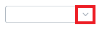
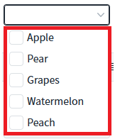
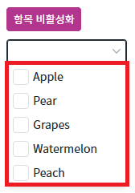
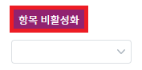
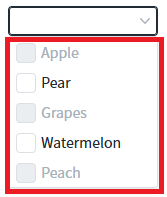
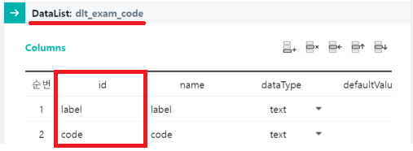
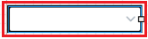
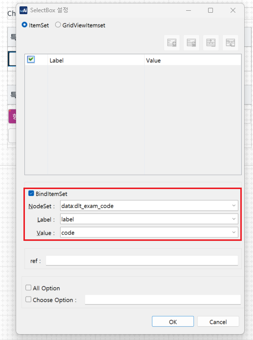

CheckCombobox의 'setItemDisabled' 메소드를 사용하여 특정 항목을 비활성화 하는 예제입니다.
항목이 전부 활성화된 것을 확인하기
특정 항목이 전부 비활성화된 것을 확인하기
예제 영역 '특정 항목 비활성화 미지정' 기본 설정 값에서 테스트합니다.1
STEP 1: 목록을 확장합니다.
CheckCombobox를 클릭하여 목록을 확장합니다.
Image 1.브라우저(Chrome) 실행 예시

2
STEP 2: 항목이 전부 활성화되어 있는 것을 확인합니다.
Image 2.브라우저(Chrome) 실행 예시

예제 영역 '비활성화 지정 - 스크립트'에서 테스트합니다.1
STEP 1: 초기 상태를 확인합니다.
'3.1 항목이 전부 활성화된 것을 확인하기'의 STEP2처럼 CheckCombobox의 목록을 확장해서 항목이 전부 활성화되어있는 것을 확인한다.
Image 3.브라우저(Chrome) 실행 예시

2
STEP 2: '항목 비활성화' 버튼을 클릭한다.
Image 4.브라우저(Chrome) 실행 예시

3
STEP 3: 실행된 결과를 확인합니다.
목록을 확장해서 항목들이 비활성화된 것을 확인한다.
Image 5.브라우저(Chrome) 실행 예시

이 기능은 컴포넌의 목록이 DataList와 연결되어야 사용할 수 있는 기능입니다.
컴포넌트의 목록과 연결할 DataList를 정의합니다.
DataList를 생성하고 ID를 dlt_exam_code로 할당합니다.
필수로 정의될 컬럼은 2가지로 아래와 같습니다. 컬럼의 ID는 환경에 맞게 정의할 수 있습니다.label : 화면에 출력할 레이블
code : 화면에 출력할 레이블의 값
Image 6.웹스퀘어 스튜디오 예시

생성한 DataList에서 사용할 데이터를 할당합니다. 예제에서는 화면이 로딩된 시점(scwin.onpageload)에 데이터를 할당하고 있습니다.
Example 1.Script
scwin.onpageload = function() { //DataList에 데이터 세팅 dlt_exam_code.setJSON([ {"label":"Apple","code":"01"}, {"label":"Pear","code":"02"}, {"label":"Grapes","code":"03"}, {"label":"Watermelon","code":"04"}, {"label":"Peach","code":"05"} ]); };
스튜디오의 디자인 탭에서 컴포넌트를 더블 클릭하여 목록과 DataList를 연결합니다. (아래의 이미지를 참고하여 설정합니다)
Image 7.웹스퀘어 스튜디오의 '디자인' 탭 예시 - 컴포넌트 선택

Image 8.웹스퀘어 스튜디오의 '디자인' 탭 예시 - 목록과 DataList 연결하기

메소드 'setItemDisabled'을 사용하여 설정합니다.
Example 2.Script
// 비활성화 항목 설정 - index가 0인 항목을 비활성화 한다. ccb_exam3.setItemDisabled(0, true);
setItemDisabled( index , disabled )